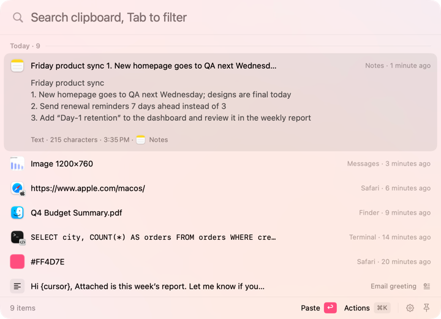
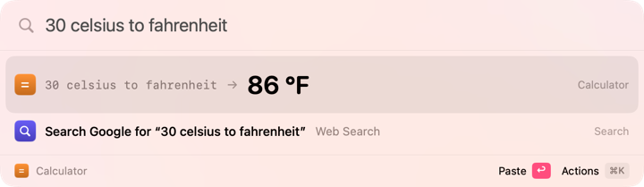
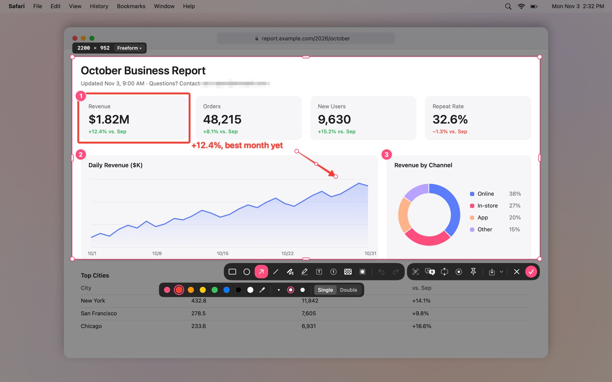
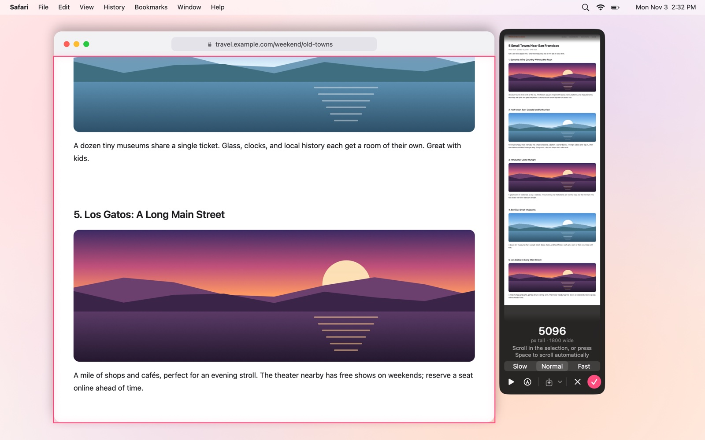
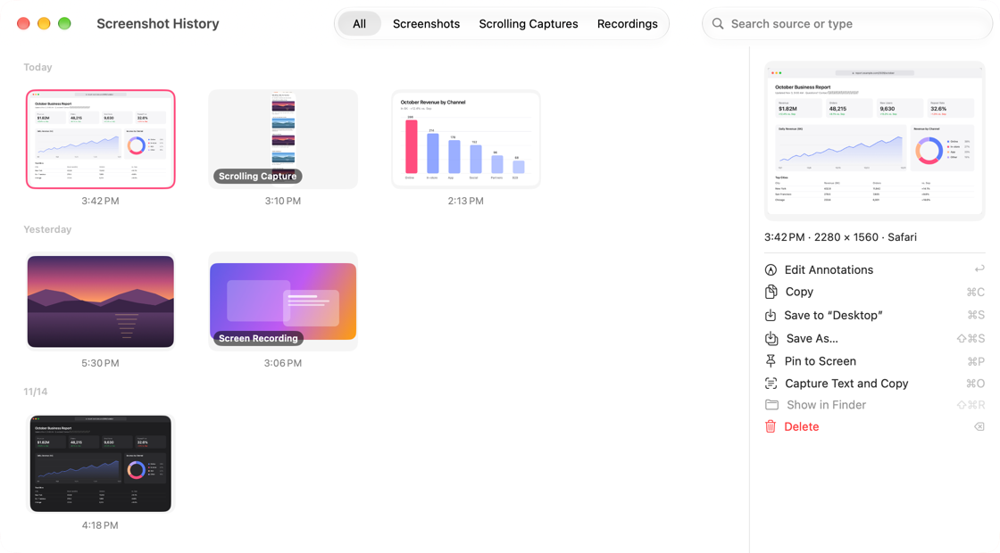
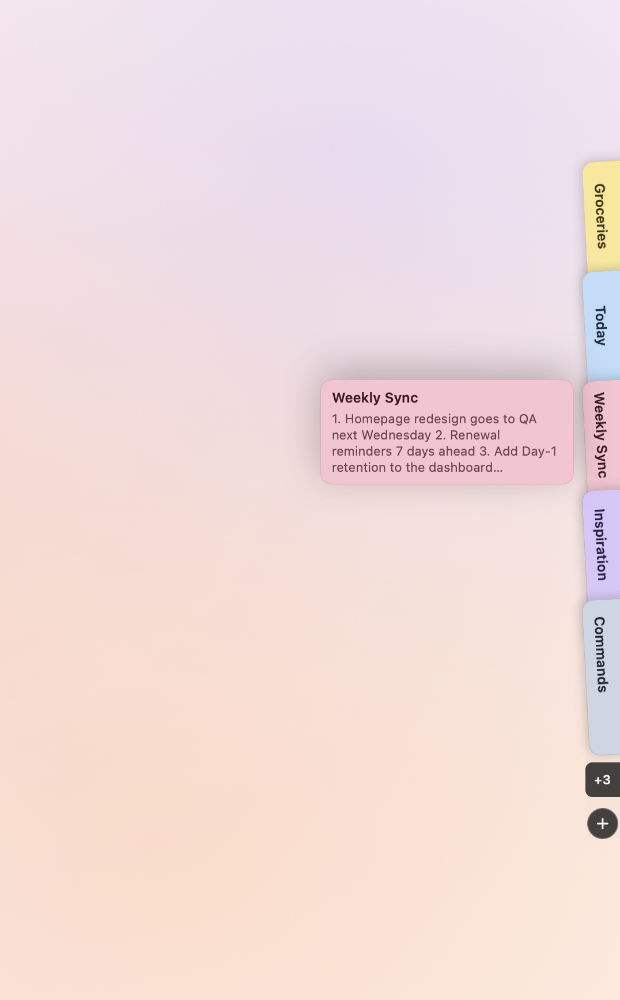
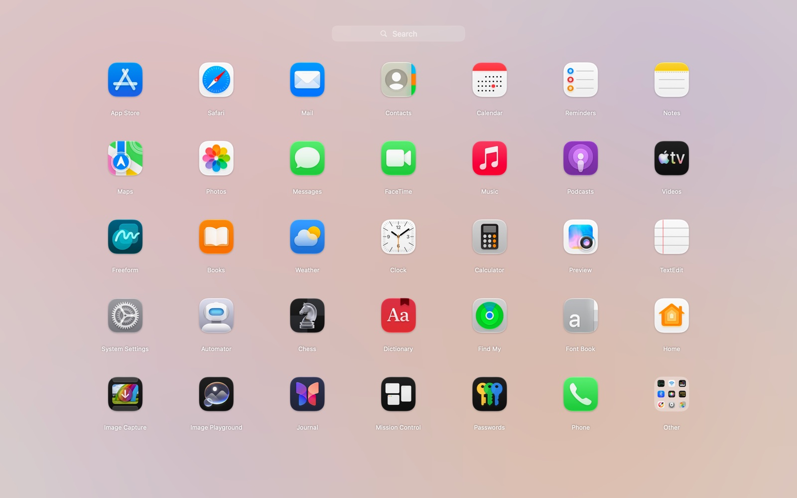
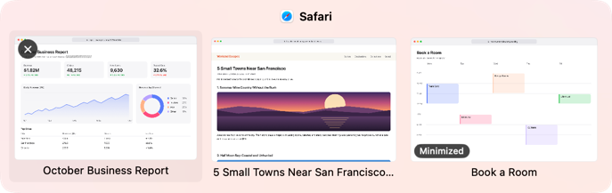
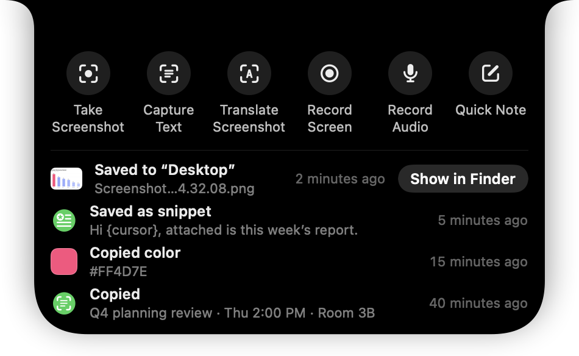
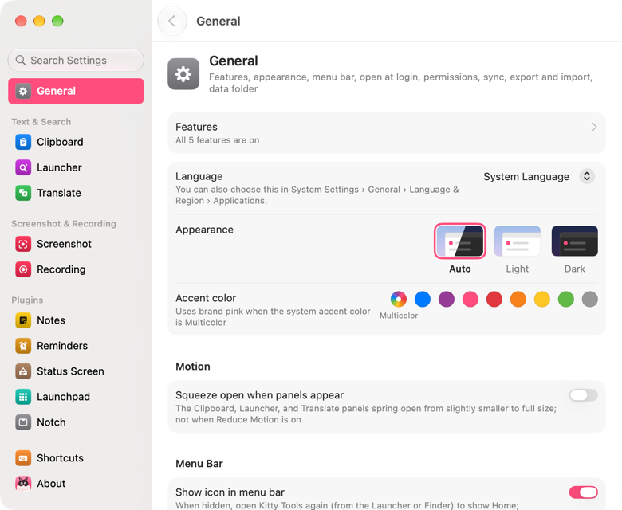

Everything, one press away
A dozen everyday tools, each with its own shortcut, none of them taking focus from the app you’re using. Each section shows which platforms have it; the ones marked “Plugin” appear once you add them in Settings.
Home and the menu bar
MacWindows
Click the cat in the menu bar (the notification area icon on Windows) and every feature is laid out in tiles, one click each.
- Left-click for Home, right-click for the menu
- Home holds one-click actions; plugins you’ve added get their own section at the end, and if some features are off, the bottom row takes you to manage them
- The menu bar icon can be shown in color or hidden entirely; shortcuts keep working
- On the Mac, just start typing on Home to search in the Launcher
- First-run setup has you pick the features you want, grant only the permissions they need and try a shortcut; you can see it again from the About page

Clipboard History ⌥C
MacWindows
Text (with its formatting), images and files you copy are all kept, and copying something again just moves it to the top.
- ↩ pastes back into your app, ⌥↩ pastes plain text, ⌘1–9 pastes the Nth item; select several to paste them together; ⌘Z brings back what you deleted
- The selected item expands in place: code with line numbers and coloring, colors in HEX / RGB / HSL, links with a title and image; ⌘Y for a closer look
- Search text, text inside images (recognized on your device), file paths, labels and source apps; press Tab to filter by type, source or collection
- Collections, snippets and labels; snippets can include placeholders for the date, the time, where the cursor goes or earlier clipboard items; favorites and snippets are never cleaned up automatically
- On the Mac, snippets can have keywords: type one in any app, Notes included, and it’s replaced with the snippet; needs Accessibility access, and can be turned off in Settings › Clipboard
- ⌘O opens a file and ⌘R shows it in Finder, ⌘T translates the item; images and text can be pinned to the screen, and items drag straight into other apps
- The panel appears at the top of the screen, at the pointer, or where you last left it; drag its edges to resize
- Skips password managers and content marked private, and blocks text that looks like keys or bank card numbers; exclude apps, pause recording, or clear history when you quit or lock the screen
- On the Mac, snippet dates and times can be offset and formatted, and snippets can ask you to fill in blanks before pasting; text mixed with images pastes back with its images; while recording is paused, the menu bar icon shows a pause badge; image items show as small pictures that grow in place when selected, and Space opens the large preview while the search field is empty

Launcher ⌥Space
MacWindows
One search field to open apps, find files, do math and search the web.
- Find apps by name (Chinese names, pinyin and initials work too), ranked by how often you use them, with favorites first; on the Mac, pick an app once for what you typed and it comes first next time, and iPad apps are found too
- Find files: “open name” opens a file and “find name” selects it in Finder; ⌘Y for Quick Look, ⌘K to open it with another app; on the Mac, select several (⇧↑↓, ⌘-click) and press ↩ to open them all or ⌘↩ to show them in Finder, and within 90 seconds of opening a file the Launcher comes back to the same search
- Math and conversions: arithmetic, percentages and functions; “10 km to mi”, “30 c to f”, “255 in hex”, and currency like “100 usd”; ↩ pastes the result
- Script Commands: every script in your scripts folder is a command, with optional arguments; results can be copied, pasted, shown in full or listed. Eight come built in on the Mac (timestamps, Base64, JSON formatting, UUIDs…), and a script an AI wrote for you works as soon as you copy it in
- Change the keyword for any built-in command or script, turn off the ones you don’t use, and give each command a shortcut; on the Mac, apps can have aliases too
- System commands: lock, sleep, empty the Trash, mute; quit or force quit apps, eject disks; “kill” ends processes, “port 3000” shows what’s using a port, and “ip” shows your addresses
- Search “Bluetooth” or “Displays” to jump to that page of System Settings; “g keyword” searches the web, with a dozen popular sites preset and room for your own
- Bookmarks and history from the browsers on your computer, with site icons; type a URL or a path starting with ~/ to open it directly
- On the Mac, run shortcuts from the Shortcuts app too, and find things by their English or Chinese names whichever language the interface is in; type a path starting with / or ~ to list what’s in the folder, with Tab to go in and ⇧Tab to go up a level; with the App Shortcuts plugin added, search the frontmost app’s menu items

Translate ⌥D
MacWindows
Select and translate without switching windows. There’s also Type to Translate ⌥T and Translate Screenshot ⌥S, or turn on Translate on Copy.
- Translate Selection: select text in any app and press the shortcut; the panel appears at the top of the screen (or at the pointer). If the selection can’t be read directly, it copies it and restores your clipboard afterwards
- Translate Screenshot: select part of the screen, recognize the text on your device and translate it; translations can also be placed right back on the screenshot
- The built-in service works out of the box, and Apple Translation and Youdao Dictionary need no key either; Baidu, Youdao, Google, DeepL, Microsoft, Volcengine, Tencent and many language models work once you add a key. Several services translate side by side, and language models stream as they write. Free services are marked in Settings, and collapsed services translate only when you expand them, using no quota
- Look up a single word for a dictionary entry, with real-voice pronunciation for English words; replace the original text with the translation, or set a shortcut that does it in one press
- Translation history and the Word List: searchable, with favorites, and exportable as a spreadsheet or flashcards
- With the target set to Auto it translates between your first and second languages; translations can be read aloud or copied automatically
- The Mac version translates 30 languages (Vietnamese, Thai, Arabic, Dutch, Polish…), and very long texts are translated in parts so they don’t stop halfway; language models can explain foreign sentences (key words and the sentence pattern), each language model service can take extra instructions, and reading aloud can go slower or faster

Screenshot ⌥A
MacWindows
Capture it, mark it up, send it off. Capture Previous Area ⌥X, Capture Text ⌥O.
- The screen freezes before you select; hovering detects windows, and the selection snaps to window and screen edges; type an exact size or lock the ratio
- It can also pick out buttons, text fields, sidebars, file names and links inside windows, with the scroll wheel moving in and out, and on the Mac elements in web pages too (off by default, turn on in Settings)
- A magnifier color picker: press C to copy the color under the pointer
- Ten annotation tools: rectangle, ellipse, arrow (curved or double-headed), line, pen, highlighter, text (adjustable size), counter, blur and spotlight, switched with the number keys; everything stays movable and resizable by its corners and edges, with undo; an eyedropper picks colors from the screenshot
- Blur is a real blur, or pixelate instead; “Auto” covers phone numbers, email addresses, bank card numbers and ID numbers in one go
- ↩ copies, ⌘S saves, or pin it to the screen for reference; recognize text (QR codes too) or translate it; right-click a toolbar button to change its key
- Scrolling Capture: after selecting, press S and scroll inside the selection to stitch it together, or press Space to scroll automatically (speed adjustable); annotate the result afterwards
- Screenshot History: screenshots, scrolling captures, pinned images and recordings all in one place, searchable and filterable; double-click one to keep annotating
- On the Mac, you can also select, copy and translate text right on pins, crop while annotating, edit annotations from the thumbnail in the corner, include the pointer or hide desktop icons, and turn off the hints and magnifier while selecting; screenshots have rounded, transparent corners (adjustable, or square if you prefer), clicking a whole window captures its own rounded corners and shadow, and Timed Screenshot counts down 5 or 10 seconds before you select so you can capture tooltips



Screen & Audio Recording ⌥R
MacWindows
Select an area or a whole screen just like a screenshot and press ↩; recording starts after a 3-second countdown.
- Records system audio and the microphone (on the Mac, choose which microphone), and can show clicks and the keys you press
- A timer runs in the menu bar; press the shortcut again to stop and save
- On the Mac, screen and audio recordings can be paused and resumed: nothing is recorded or timed while paused, and stopping joins everything into one file; Pause / Resume Recording can have its own shortcut
- Record Audio starts with a control bar: choose the source (microphone, system audio or both), watch the levels, and save as m4a
- The finished video card waits in a corner of the screen: copy it, drag it away, convert it to GIF or compress it
- Frame rate, quality and format are all in Settings

Notes ⌥N
Mac · PluginWindows
Notes on the edge of your screen, for whatever comes to mind.
- Quick Note: press ⌥N in any app for a small box, and save it as a new note or add it to the end of another
- The stack on the screen edge: a pill on the edge of the screen fans out into tabs when the pointer comes near; click one to write, and you’re back in your app when you’re done
- All Notes: a Note Wall or a list; search, archive and pin; deleted notes stay for 30 days and can be put back
- Floating notes: drag a note out onto the desktop, and it comes back to the same place after a restart
- Plain text with Markdown styling: headings, lists, quotes, code blocks, links; five task states, text colors, inline images, find and undo
- Export everything or a single note as Markdown and import it again; works with Clipboard History, the Launcher and Translate Selection; syncs between computers
- On the Mac, select several notes to delete, archive or recolor them at once (undone in one step), sort by Recently Modified, keep links, bold, headings, lists and code when pasting from the web, paste images into Quick Note, and call up the stack on the screen edge with a shortcut


Reminders
Mac · PluginWindows
Set a time, and when it’s due the reminder appears on the Notch: click “Got It” or “Snooze”.
- Ring once, or repeat every day, every weekday, every week, every month or at an interval
- Each one can go full screen, flash the screen border or be read aloud, or switch straight to the Status Screen
- If you don’t respond, it nags again after an interval you choose, going full screen the third time
- Create one in a sentence from the Launcher: “remind me in 10 min to stretch”
- Alert sounds can be system sounds, sounds you’ve added or any audio file
- “New Reminder” is in the menu bar and on Home, and can have a shortcut; reminders sync when sync is on
- On the Mac, reminders recognize your Focus: during any Focus, a due reminder only shows an icon on the Notch, without popping up or making a sound, and they all come up when it ends; you can have them wait until it ends or ring as usual instead, and set an important reminder to always ring
Launchpad
Mac onlyPluginmacOS 26 and later
The familiar full-screen grid of app icons, over a blurred version of your wallpaper.
- Page through it, and just start typing to search
- Drag to rearrange, and drop icons onto each other to make folders
- Hold an icon to make them jiggle, and delete apps installed from the App Store
- Pinch with four or five fingers on the trackpad to open it, following your fingers; a hot corner works too
- Hide apps you don’t want to see (they still show up in search), and add a row of frequently used apps at the top, ordered by how often you open them (off by default)
- The first time it opens, pages and folders match the system Launchpad you had; on macOS 15 it doesn’t appear (use the system’s own)

Status Screen
Mac · PluginWindows
One press covers every screen with a notice and blocks the keyboard and mouse: for wiping the screen, keeping hands off a computer that’s running a job, or stepping away from your desk.
- “Clean Screen”, “Do Not Touch” and “Be Right Back” come built in
- Change the text, icon and style, with any system emoji as the icon; keep several statuses and pick one with the shortcut before entering
- Hold Esc for 2 seconds, or hold the hint at the bottom of the screen with the mouse, to exit
- Add an exit passcode if you like

Dock Preview
Mac onlyPlugin
Hover over an app in the Dock to see thumbnails of all its windows.
- Minimized and hidden windows, and windows on other desktops, are included
- Click one to switch to it; hover and click ✕ to close that window
- Previews also appear while switching apps with ⌘Tab; the hover delay is adjustable
- Needs Accessibility access; thumbnails need Screen Recording access

Notch
Mac onlyPlugin
Copied, saved, something went wrong: notices grow out of the notch, and hovering expands them to show the full text and buttons. That part is always there; the Notch plugin adds:
- Focus: when a Focus turns on, off or changes, the notch shows its icon and name with On or Off for 2 seconds, and its icon stays beside the notch while it’s on. Focuses you made yourself work too, with no permission needed
- Activities beside the notch: timers while recording, countdowns for reminders due within the hour, and progress for long tasks like compressing and copying; on displays without a notch they sit in the menu bar
- Now Playing: artwork and a level meter beside the notch; open it to scrub, change tracks and adjust the volume, or swipe left or right with two fingers to change tracks; tint it with the artwork, your accent color or white, and click a heart to favorite the song in Music (off by default)
- Next Event: a countdown starting 10 minutes before an event, with one-click joining for video meetings; use calendar colors and choose which calendars to read (off by default, needs Calendars access)
- System Notices: plugging in power, a low battery or connecting headphones pops up with the battery level, and the volume and brightness indicators can move to the notch; Low Power Mode turning on or off gets a notice too (off by default)
- Click the notch or swipe down with two fingers for a row of quick actions you can rearrange or turn off, plus recent notices and this month’s calendar if you want them
- More options, all off by default: an hourly chime, a sound when an event starts, hiding the Notch in screenshots and recordings or when the front app is full screen, an outline around it, and how long notices stay and how soon it expands


Keep Awake
Mac · PluginWindows · Plugin
Keep your computer from sleeping while it downloads, presents or runs a job overnight.
- Indefinitely, for a few hours or until a set time; turn it on from the menu bar, Home, a shortcut or the Launcher (“awake 2h”)
- Keep the display on too, or only prevent system sleep and let the display turn off as usual
- Turn it on automatically on a schedule, like weekdays 9:00–18:00
- On the Mac, while it’s on it sits beside the notch; click to stop it
Smooth Scrolling
Mac onlyPlugin
A regular mouse wheel glides like a trackpad.
- Adjust how long it glides and how far each notch scrolls
- Reverse the mouse on its own (the Magic Mouse too), leaving the trackpad as it is
- Hold ⌥ to scroll without smoothing for a moment, or ⇧ to scroll sideways
- Games, virtual machines and remote desktops are left alone automatically, and you can add other apps; needs Accessibility access
App Shortcuts
Mac onlyPlugin
Hold ⌘ on its own for a moment in any app to see every shortcut in its menus, grouped by menu.
- Use ⌥, ⌃ or ⇧ instead, and set how long to hold (0.6–2 seconds); a shortcut can open it too
- Columns run on with the shortcuts lined up in one column, and matched text is highlighted; the system’s Move & Resize items fold into one row you can expand
- Once it’s up, keep holding ⌘ and also hold ⇧, ⌥, ⌃ or 🌐 to highlight only the shortcuts that use those keys
- Press another key while holding and it goes to the app as usual
- Click a row to run it; click the search field to keep the list open and type to search
- Needs Accessibility access
Key Remapping
Mac onlyPlugin
Remap keys on one specific keyboard. The system does the mapping, so your keystrokes aren’t watched.
- F1–F24, Caps Lock, the left and right modifier keys, letters and numbers, arrow keys, the keypad and media keys can all be remapped
- Map a key to 🌐 Globe / Fn to give an external keyboard a Fn key
- Mappings come back after the keyboard reconnects or your Mac wakes; removing the plugin undoes the rules it wrote
- Remapping letters, numbers and similar keys needs Input Monitoring access
Bluetooth Sleep
Mac onlyPluginMacBook
Bluetooth turns off when you close the lid and your Mac sleeps, so a Bluetooth mouse or keyboard won’t wake it in your bag.
- On waking, only the Bluetooth it turned off comes back on
- It stays on while an external display is connected, or you can have it turn off every time
- The system asks for Bluetooth access when you add it
Settings, Sync and Backup
MacWindows
Appearance, shortcuts and every feature’s details are in the Settings window, whose sidebar can search for any setting.
- Follow the system appearance, or stay light or dark; choose your own accent color; on the Mac from macOS 26, the app icon follows the system icon style (Dark, Tinted, Clear)
- Turn off features you don’t need: their entry points, shortcuts and background work stop together and come back the moment you turn them on; on the Mac, Notes, Reminders, the Notch, Smooth Scrolling and others are plugins you add in Settings › Plugins, where you can see what each one does and needs before adding it
- The Mac version’s interface is available in English and Simplified Chinese: choose in Settings › General › Language, which follows the system by default
- Change any global shortcut, including to a double press of a modifier key; on the Mac, shortcuts can be turned off in specific apps, handing the keys to them; Keyboard Shortcuts lists them all by feature, searchable
- On the Mac, each Settings page shows what you use most, groups open on their own page, rarely changed options are under Advanced…, and details are behind the ⓘ at the end of each row; search takes you straight to a setting, and resting on a few settings plays a preview of the effect
- Sync: choose a folder on a synced drive (iCloud Drive, for example) or connect to a WebDAV server, and settings, snippets and favorites, the Word List, notes, reminders and more sync between computers, each kind with its own switch; keys don’t sync. Snippets, favorites, the Word List, web searches, translation services, notes and reminders also sync between Mac and Windows
- A backup every day; export settings and data to a single file and import it again, including between the Mac and Windows versions
- New versions show up in the menu bar and install in one click; on the Mac they download in the background and install when you quit, and you can skip a version

Default shortcuts
Change any of them in Settings › Shortcuts. The ones not listed (Record Audio, Pause / Resume Recording, Screenshot History, Translate and Replace Selection, New Note, New Reminder, Launchpad, Status Screen…) have no shortcut by default; record one when you need it. A shortcut doesn’t work while its feature is off or its plugin isn’t added, and new Mac installs only turn on Clipboard, Launcher, Translate and Screenshot.
| Feature | Mac | Windows |
|---|---|---|
| Clipboard History | ⌥C | Alt+C |
| Launcher | ⌥Space | Alt+Space |
| Translate Selection | ⌥D | Alt+E |
| Type to Translate | ⌥T | Alt+T |
| Translate Screenshot | ⌥S | Alt+S |
| Take Screenshot | ⌥A | Alt+X |
| Capture Previous Area | ⌥X | Ctrl+Alt+Z |
| Capture Text | ⌥O | Alt+O |
| Record Screen (press again to stop) | ⌥R | Alt+R |
| Quick Note (Notes) | ⌥N | Alt+N |
macOS 15.0 and 15.1 don’t allow shortcuts with only ⌥; on those versions, use a combination with ⌘ or ⌃ (the Shortcuts page tells you). While another app is taking a password (macOS has Secure Input on), shortcuts on the Mac that use only ⌥ with a letter, number or symbol can’t fire—macOS doesn’t allow it. The menu bar icon then shows a small orange lock that tells you which app has Secure Input on and how to turn it off. To use a shortcut even in password fields, give it ⌃ or ⌘, or make it a double press of a modifier (⌥Space isn’t affected).
Want to try it?
Free to download. The Mac version needs macOS 15 or later, on Apple silicon or Intel; the Windows version needs Windows 11 (22H2 or later).